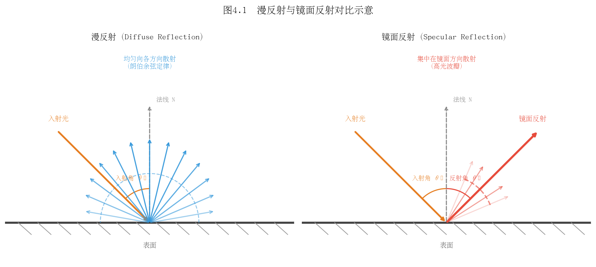
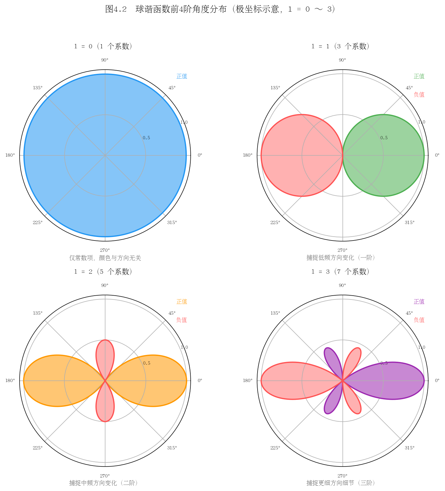
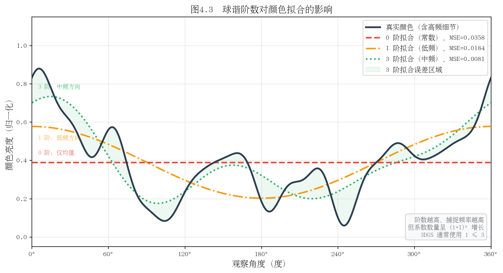

第四章：球谐函数与外观建模
4.1 颜色与观察方向的关系
朗伯体与非朗伯体
在三维场景重建中，物体表面的外观并非在所有观察方向上都相同。理解这一现象，需要首先区分两类理想化的反射模型。
**朗伯体（Lambertian Surface）**是最简单的漫反射模型。其核心假设是：表面向各个方向的辐射亮度（Radiance）与观察方向无关，只与入射光方向和表面法线之间的夹角余弦成正比。日常生活中，哑光墙面、纸张、未抛光木材等接近朗伯体。对于朗伯体，无论相机从哪个角度拍摄，同一个表面点的颜色（在相同光照下）几乎保持不变。
**非朗伯体（Non-Lambertian Surface）**则展现出与观察方向密切相关的外观变化。金属、玻璃、塑料表面、水面等都属于此类。当光线以特定角度照射时，这些表面会产生明显的镜面高光（Specular Highlight），高光的位置随观察方向改变而移动。
**镜面反射（Specular Reflection）**是非朗伯体行为中最典型的现象。根据经典的 Phong 模型或物理正确的 Cook-Torrance BRDF（双向反射分布函数），镜面反射强度与反射向量 \(\mathbf{r}\) 和观察方向 \(\mathbf{v}\) 之间的夹角密切相关：
其中 \(n\) 控制高光的锐利程度，\(k_s\) 为镜面反射系数。

图 4-1：左侧为朗伯体球，从不同方向观察颜色几乎不变；右侧为具有镜面反射的球，高光随观察方向移动。这一差异是场景中外观方向依赖性的直观体现。
为什么需要方向相关颜色
在 3D Gaussian Splatting（3DGS）中，场景中的每个高斯基元需要表示真实世界中物体的外观。真实场景几乎不存在纯粹的朗伯体，金属框架、玻璃窗、光泽地板乃至人的皮肤都具有不同程度的视角依赖性。
如果仅为每个高斯赋予一个固定的 RGB 颜色（即假设朗伯体），则在多视图一致性重建时，模型不得不"妥协"——要么过度平滑高光区域，要么在不同训练视角之间产生矛盾的梯度信号，导致重建质量下降。
因此，3DGS 为每个高斯基元的颜色引入了视角依赖性（View-Dependent Appearance）：颜色不再是一个固定值，而是一个关于观察方向的函数：
其中 \(\mathbf{d}\) 为归一化的观察方向向量，\(f\) 是待学习的映射函数。如何高效、紧凑地表示这个定义在球面上的函数，正是球谐函数（Spherical Harmonics）的用武之地。
思考题 4.1
在室外场景重建中，天空和树叶的外观是否存在视角依赖性？请分别分析并说明原因。
假设场景全部由朗伯体构成，使用方向相关颜色表示是否会带来额外的优化困难？为什么？
双向反射分布函数（BRDF）中的"双向"指的是什么？它与本节讨论的观察方向依赖性有何联系？
4.2 球谐函数是什么
球面上的正交基函数
球谐函数（Spherical Harmonics，SH）是定义在单位球面 \(S^2\) 上的一组特殊函数族。其核心性质是正交完备性：球面上任意平方可积函数 \(f(\theta, \phi)\) 都可以用球谐函数的线性组合来近似表示，就如同欧氏空间中的任意向量可以用正交基向量展开一样。
正交性的数学表达为：
其中 \(d\Omega = \sin\theta \, d\theta \, d\phi\) 是球面面积元，\(\delta\) 为 Kronecker delta。这意味着不同的球谐基函数之间相互正交，因此可以独立地编码不同的"频率分量"。
类比傅里叶级数
理解球谐函数的最直观方式是将其与傅里叶级数类比：
概念 |
傅里叶级数（圆上） |
球谐函数（球面上） |
|---|---|---|
定义域 |
单位圆 \([0, 2\pi)\) |
单位球面 \(S^2\) |
基函数 |
\(\sin(n\theta), \cos(n\theta)\) |
\(Y_l^m(\theta, \phi)\) |
频率参数 |
阶数 \(n\) |
阶数 \(l\)（频带） |
系数数量 |
每阶 2 个（\(n>0\)） |
每阶 \(2l+1\) 个 |
低频 |
慢变化（大尺度轮廓） |
缓慢变化的球面函数 |
高频 |
快变化（细节） |
快速振荡的球面函数 |
傅里叶级数将周期函数分解为不同频率的正弦余弦波；球谐函数则将球面函数分解为不同"空间频率"的球面波。截断到有限阶数相当于对原始函数做低通滤波，保留主要的低频特征而舍弃高频细节。
阶数 \(l\) 与频率的对应
球谐函数以阶（Degree/Band） \(l = 0, 1, 2, 3, \ldots\) 和次（Order） \(m = -l, -l+1, \ldots, l\) 来索引。每个阶 \(l\) 包含 \(2l+1\) 个基函数，前 \(L\) 阶共包含 \(\sum_{l=0}^{L-1}(2l+1) = L^2\) 个基函数。
\(l=0\)（0 阶）：仅 1 个基函数 \(Y_0^0\)，值为常数——表示与方向无关的平均颜色；
\(l=1\)（1 阶）：3 个基函数，能表示简单的方向性渐变（如一侧亮一侧暗）；
\(l=2\)（2 阶）：5 个基函数，能捕捉更复杂的方向变化，如椭圆形高光；
\(l=3\)（3 阶）：7 个基函数，可以表示较为精细的反射细节。

图 4-2：球谐基函数 \(Y_l^m\) 在球面上的分布。红色代表正值，蓝色代表负值。随着阶数 \(l\) 增大，基函数的空间振荡频率逐渐提高，能捕捉更精细的方向变化。
思考题 4.2
傅里叶变换在图像压缩（如 JPEG）中被广泛使用，球谐函数能否用于压缩球面图像（如环境贴图）？请说明思路。
为什么每阶 \(l\) 恰好有 \(2l+1\) 个基函数，而不是其他数量？尝试从对称性或拉普拉斯算子的本征值角度思考。
在实时渲染中，预计算辐射传输（PRT）大量使用球谐函数。请查阅相关资料，说明 PRT 是如何利用球谐函数的正交性加速计算的。
4.3 球谐函数的数学定义
实数形式 \(Y_l^m(\theta, \phi)\)
在物理学中，球谐函数通常以复数形式定义。然而在计算机图形学和 3DGS 的实现中，普遍采用实数形式（Real Spherical Harmonics），因为 RGB 颜色本身是实数。
实数球谐函数 \(Y_l^m(\theta, \phi)\) 的定义为：
其中：
\(\theta \in [0, \pi]\) 为极角（天顶角），\(\phi \in [0, 2\pi)\) 为方位角；
\(P_l^m\) 为连带勒让德多项式（Associated Legendre Polynomial）；
归一化系数 \(K_l^m = \sqrt{\frac{(2l+1)}{4\pi} \cdot \frac{(l-|m|)!}{(l+|m|)!}}\)。
前几阶的显式表达式（已归一化）如下，以笛卡尔分量 \((x, y, z)\) 表示：
\(l=0\)：
\(l=1\)：
其中 \((x, y, z)\) 为单位方向向量分量。这种以笛卡尔分量表示的形式在实际实现中更为常用，避免了三角函数的计算。
\(l=2\)：（共 5 个基函数，涉及 \(xy, yz, xz, x^2-y^2, 3z^2-1\) 等二次项）
\(l=3\)：（共 7 个基函数，三次多项式形式）
前 4 阶系数数量
阶数 \(l\) |
基函数数量 \(2l+1\) |
累计基函数数 |
|---|---|---|
0 |
1 |
1 |
1 |
3 |
4 |
2 |
5 |
9 |
3 |
7 |
16 |
总计 16 个基函数
使用前 4 阶（\(l = 0, 1, 2, 3\)）共 \(4^2 = 16\) 个实数球谐基函数，对于 RGB 三通道颜色，每个高斯基元需要存储 \(16 \times 3 = 48\) 个浮点数的球谐系数。这是 3DGS 官方实现（即 3 阶球谐）的标准配置，在表达能力和存储开销之间取得了较好的平衡。
思考题 4.3
在 3DGS 代码实现中，球谐函数通常以方向向量的 \((x, y, z)\) 分量而非 \((\theta, \phi)\) 角度作为输入，请说明这样做的计算优势。
连带勒让德多项式 \(P_l^m\) 满足递推关系。查阅其递推公式，思考如何用递推方式高效计算所有 16 个基函数的值，避免重复计算。
归一化系数 \(K_l^m\) 的作用是什么？若不归一化，正交性条件会如何改变？
4.4 用球谐函数表示颜色
RGB 各通道独立展开
在 3DGS 中，每个高斯基元的颜色被表示为观察方向 \(\mathbf{d}\) 的函数。对 RGB 三个通道分别进行球谐展开：
三个通道相互独立，分别学习各自的球谐系数。这一设计的合理性在于：红、绿、蓝三个通道对应的光谱响应不同，视角依赖性的强度和形态也可能有所差异（例如金属在不同波长下的反射率不同）。
已知方向如何计算颜色——线性组合
给定一个归一化的观察方向向量 \(\mathbf{d} = (x, y, z)\)（满足 \(x^2+y^2+z^2=1\)），计算颜色的步骤如下：
**第一步：计算所有基函数的值。**将 \(\mathbf{d}\) 代入 16 个（3 阶时）球谐基函数，得到一个长度为 16 的向量：
**第二步：与系数向量做点积。**对每个通道分别计算：
这是一个纯粹的线性运算，计算代价极低（16 次乘法，15 次加法），非常适合 GPU 并行计算。
**第三步：激活函数映射到有效颜色范围。**通常对计算结果加 0.5 的偏置后取 sigmoid 或直接截断到 \([0, 1]\)：
系数作为可学习参数
球谐系数 \(k_{l,m}^{R/G/B}\) 是 3DGS 优化过程中的可学习参数，与高斯的位置、协方差、不透明度等参数一起通过梯度下降进行更新。
从梯度反传的角度，由于颜色计算是关于系数的线性函数，梯度计算极为简单：渲染损失对系数 \(k_{l,m}^R\) 的梯度直接等于对应的基函数值 \(Y_l^m(\mathbf{d})\)，不存在梯度消失或爆炸的风险。
在训练初始化阶段，通常将 0 阶系数（\(Y_0^0\)，对应平均颜色）初始化为一个与点云颜色相关的值，高阶系数初始化为零，使模型从朗伯体假设出发，逐步学习视角相关的细节。
思考题 4.4
设某高斯基元的 R 通道球谐系数向量为 \(\mathbf{k}_R\)，请写出当观察方向从正上方（\((0,0,1)\)）变化到正前方（\((0,1,0)\)）时，\(c_R\) 变化量的计算公式。
球谐系数展开是对颜色函数的全局近似。如果某个高斯只在场景中极小的立体角内可见（如被遮挡的表面），高阶系数是否仍然有意义？这对优化有何影响？
3DGS 训练初期通常只启用 0 阶球谐（固定颜色），在一定迭代步数后才逐步引入高阶项。请解释这种课程学习（Curriculum Learning）策略的合理性。
4.5 阶数选择的工程折衷
0 阶——常色（无方向依赖）
使用 \(l=0\) 时，每个高斯基元的颜色为常数：
这等价于传统的固定 RGB 颜色，与观察方向完全无关。每个高斯仅需 3 个颜色参数（RGB 各 1 个）。
**适用场景：**快速原型验证、朗伯体主导的场景（如户外大范围地形重建）、对存储有严格限制的移动端部署。
**局限性：**无法表示任何镜面反射、视角相关效果，高光区域会被平均成模糊的颜色，重建质量显著下降。
3 阶——质量与开销的平衡
使用 \(l=0,1,2,3\)（共 16 个基函数），每个高斯的颜色参数数量为 \(16 \times 3 = 48\) 个浮点数。这是 3DGS 论文和官方实现的默认配置，也是业界最广泛采用的设置。
选择 3 阶的理由：
3 阶球谐能够有效捕捉低频镜面反射，覆盖了绝大多数室内外场景中的视角相关效果；
梯度计算高效，线性前向传播不引入额外的计算图复杂度；
存储开销可控，相比 0 阶仅增加 16 倍颜色参数，但整个高斯基元的总参数（含位置、协方差、不透明度）增量约为 30–40%；
3 阶对应的最高空间频率大致等同于 \(7 \times 7\) 像素的局部高光分辨率，对于渲染而言已经足够。

图 4-3：从 0 阶到 3 阶球谐对同一场景的颜色拟合效果。0 阶（常色）完全无法捕捉高光；1 阶可表示简单的方向性渐变；2 阶开始出现粗略的高光；3 阶已能较好还原真实材质的视角依赖外观。
更高阶的边际收益
使用 4 阶及以上球谐，参数数量急剧增加：
最高阶 \(L\) |
总基函数数 \(L^2\) |
每高斯颜色参数 |
相对于 3 阶的增量 |
|---|---|---|---|
1 |
1 |
3 |
-94% |
2 |
4 |
12 |
-75% |
3 |
9 |
27 |
基准 |
4 |
16 |
48 |
+78% |
5 |
25 |
75 |
+178% |
然而，实验表明从 3 阶升级到 4 阶，PSNR 的提升通常不超过 0.5 dB，而参数量接近翻倍。这一边际收益递减的现象源于以下原因：
**真实场景的低频本质：**大多数室外场景的主要光照变化（天空光、漫射光）属于低频信号，3 阶已能充分表示；
**其他瓶颈的主导：**限制重建质量的往往是高斯密度不足、几何精度不够，而非颜色表达能力；
**过拟合风险：**高阶系数在观测稀疏的方向上容易过拟合到训练视角，导致新视角合成效果变差；
**GPU 缓存效率：**更大的参数张量意味着更高的显存带宽压力，可能导致实际渲染速度下降。
近期研究表明，对于某些特殊场景（如高反射性室内场景、镜面较多的工业场景），引入神经网络（如 MLP）替代高阶球谐可以在更低的参数开销下获得更好的视角相关效果。这也是 3DGS 后续变体（如 Scaffold-GS、Mip-Splatting 等）的重要改进方向之一。
思考题 4.5
假设你需要重建一个以镜面材质为主的场景（如浴室内的金属水龙头），你会选择几阶球谐？是否有其他替代方案？请给出理由。
球谐函数只能表示低频的视角相关颜色变化。对于非常尖锐的镜面高光（如抛光金属），球谐表示的根本局限是什么？需要多少阶才能粗略逼近？
在参数量相同的情况下，使用更多低阶高斯（每个 3 阶 SH）与更少高阶高斯（每个 5 阶 SH）哪种策略更好？请从表达能力和优化难度两个维度分析。
本章小结
本章系统介绍了球谐函数在 3D Gaussian Splatting 中的应用：
视角依赖颜色的必要性源于真实世界中普遍存在的非朗伯体反射效应；
球谐函数提供了一种在球面上表示任意函数的正交完备基，类比于傅里叶级数在圆上的作用；
实数形式的前 4 阶共 16 个基函数是 3DGS 的标准选择，对应 \(16 \times 3 = 48\) 个颜色参数；
颜色计算是球谐系数与基函数值的线性内积，高效可微，适合 GPU 加速的梯度优化；
3 阶配置在表达能力、存储开销和优化稳定性之间取得了实践验证的最佳平衡，更高阶的边际收益有限。
下一章将讨论 3DGS 的可微分光栅化过程（Tile-Based Rasterization），即如何将三维高斯投影并合成最终的渲染图像。
推荐阅读
Ramamoorthi & Hanrahan, "An Efficient Representation for Irradiance Environment Maps", SIGGRAPH 2001（球谐函数在图形学中的经典应用）
Sloan et al., "Precomputed Radiance Transfer for Real-Time Rendering in Dynamic, Low-Frequency Lighting Environments", SIGGRAPH 2002（PRT 技术）
3DGS 代码：
scene/gaussian_model.py中的get_features()方法（球谐系数的存取）
上一章：第三章：高斯函数与概率基础 | 下一章：第五章：体渲染与 Alpha 合成